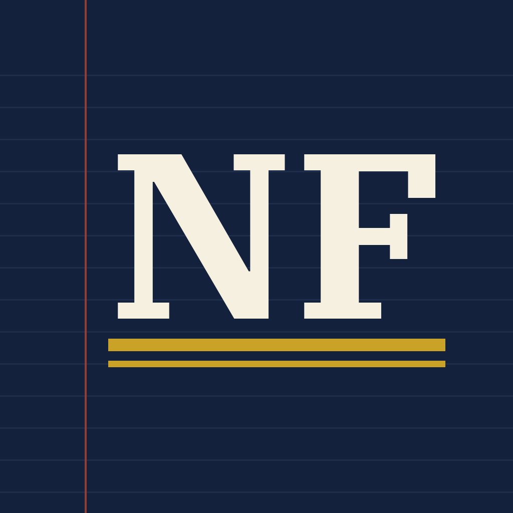

True stories of money, manias and the people caught up in them
NorthernForge makes short documentaries about bubbles, swindles and business history: how fortunes were made and lost, told from the records of the time.
Latest documentary
 The Great Cowboy Stock Crash2026-10-29 · 16 min
The Great Cowboy Stock Crash2026-10-29 · 16 min
In the 1880s, British investors put more than $45 million into American cattle ranches they had never seen, most of it from Scotland. Then came the winter of 1886-87, "the death knell on the range".
Recent Shorts
 Roosevelt Bet His Salary on Cattle. They Froze Standing Up2026-11-04 · Short
Roosevelt Bet His Salary on Cattle. They Froze Standing Up2026-11-04 · Short He Got His Money Out of Ponzi in Time. It Didn't Save Him.2026-11-02 · Short
He Got His Money Out of Ponzi in Time. It Didn't Save Him.2026-11-02 · Short A $5 Cow Could Fetch $40. Investors Still Lost.2026-10-29 · Short
A $5 Cow Could Fetch $40. Investors Still Lost.2026-10-29 · Short The 1881 Get-Rich Book of the Cattle Boom2026-10-29 · Short
The 1881 Get-Rich Book of the Cattle Boom2026-10-29 · ShortWhat we do
Documentaries
Long-form YouTube documentaries, each built around one story, starting with the cattle boom and bust of the 1880s.
Shorts
One-minute stories on YouTube Shorts and TikTok, each a single moment from a bigger story, like Charles Ponzi's bank or Theodore Roosevelt's ranch.
Open sources
Every documentary has a public sources page listing the record behind each fact and any corrections.